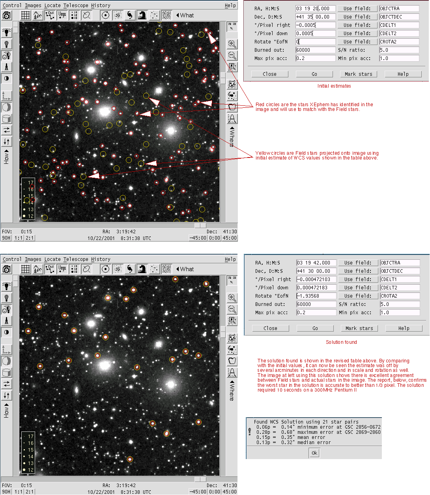

Starting with an image and an estimate of the central position, pixel scale and scene rotation, XEphem can automatically compute an accurate World Coordinate System solution. This allows accurate RA/Dec to be computed for all locations throughout the image. 